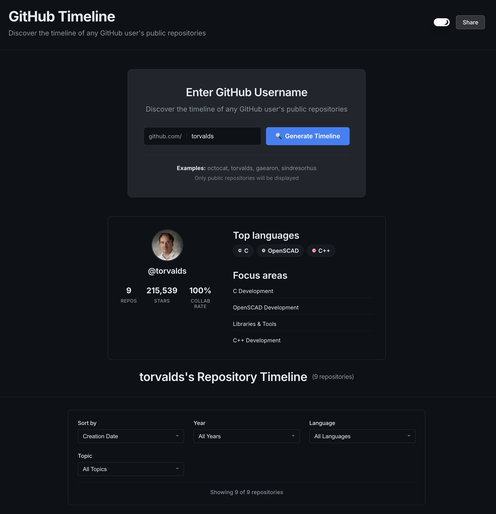
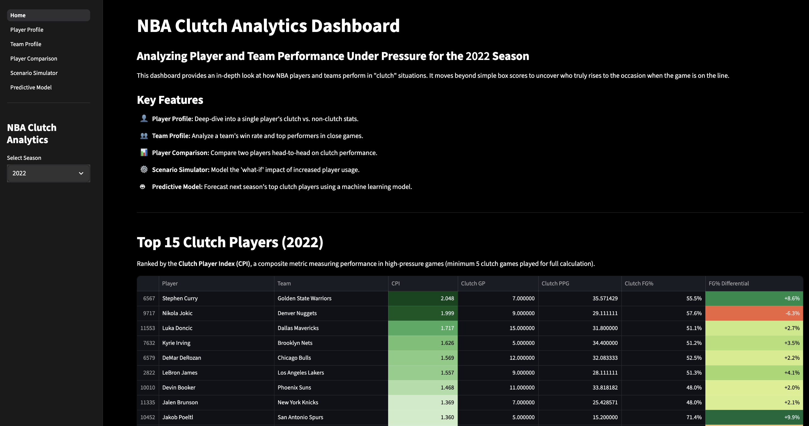

About
I'm an undergraduate at the University of Illinois Urbana-Champaign majoring in Statistics & Computer Science. My coding journey began in 7th grade when I stumbled upon this freeCodeCamp Python course. Since then, I've followed my curiosity through personal projects, research, and classes, always seeking opportunities that make me think critically and approach problems from new angles. I enjoy building software that brings clarity to real-world data, whether it's for research, automation, or solving practical problems for others.
Experience
-
May 2025 — August 2025 Built tool that turns complex Jupyter Notebooks into clean, executable dataflows and visualize their internal dependencies through interactive AST based graphs. Wrote reproducible dataflow tutorials that became part of the project's core learning materials and improved onboarding for new users.
-
Python
-
TypeScript
-
React
-
-
May 2024 — July 2024 Worked on Python tool to optimize data workflows, including caching mechanisms for large datasets and interactive reproducibility visualizations, improving efficiency and supporting collaborative analysis.
-
JupyterLab
-
Anywidget
-
Python
-
Pandas
-
Education
-
University of Illinois Urbana-Champaign
Bachelor of Science in Statistics & Computer Science · Urbana, IL
August 2025 — May 2028
- Relevant Coursework: Discrete Structures, Intro to Computer Science II, Linear Algebra, Calculus III
- Involvements: RAG @ UIUC, Financial Engineering Club, ACM SIG AIDA
- Honors: Campus Honors Program
Projects
-
GitHub Timeline
Web app for visualizing any GitHub user's public repositories in a chronological, interactive timeline. View repository details, analytics, and shareable insights at a glance. Explore top languages, stars, forks, and more.
-
React
-
Express
-
GitHub API
-
Node.js

-
-
NBA Clutch Analytics Dashboard
Streamlit-powered dashboard for NBA analytics in clutch situations. Explore player and team performance, compare head-to-head stats, and predict future clutch players with machine learning and interactive visualizations.
-
Python
-
Streamlit
-
Plotly
-
Scikit-learn

-
-
MathWorks Math Modeling Challenge
2024
Developed predictive model to forecast long-term housing supply trends using stochastic modeling, probability theory, and machine learning techniques. Authored paper earning Honorable Mention (top 22 of 655 viable papers), winning $1,000 team prize.

Certifications
-
CodePath Certificate in Intermediate Technical Interview Prep
Jun 2025 – Aug 2025
Completed intensive program focused on advanced data structures and algorithms for technical interviews.
-
Google Data Analytics Professional Certificate
Jul 2023
Learned data analysis fundamentals including data cleaning, visualization, and SQL through Google's comprehensive certification program.